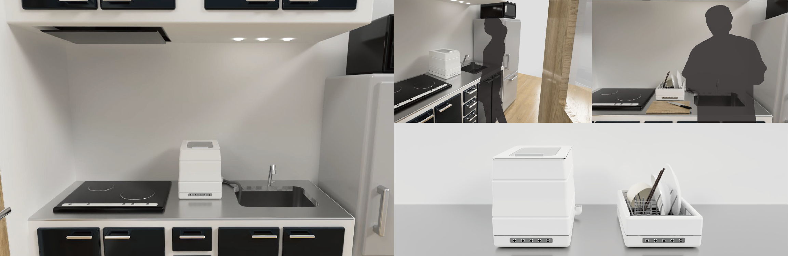

Research
デザインプロセス研究室
繁里 光宏 教授
優れたデザインは、優れたストーリーの上に成り立つ
プロダクトデザイン、UXデザイン、サービスデザインなどデザイン分野に関わらず、よいデザインを生み出すためには、ユーザーをよく知る事、自分達(ブランド)をよく知る事、そしてそのバックグランド(社会や文化)をよく知る事が大切です。 そしてそこから良いストーリー(物語)や体験を作り出すのです。 それでは、どのようにすれば“よく知る”ことができるのでしょうか？“ストーリーを作る”ことができるのでしょうか？そしてどのようにそこから“よいデザイン”を作り出すのでしょうか？ 私たちの研究の基本はそこにあります。
-

一人暮らし自炊大学生を対象とする食洗機の提案
青木 柚太 -
茶道をもっと身近に感じてもらうための体験提供
小林 詩織 -
デザインスケッチにおける表情描写の体系化
小泉 圭吹